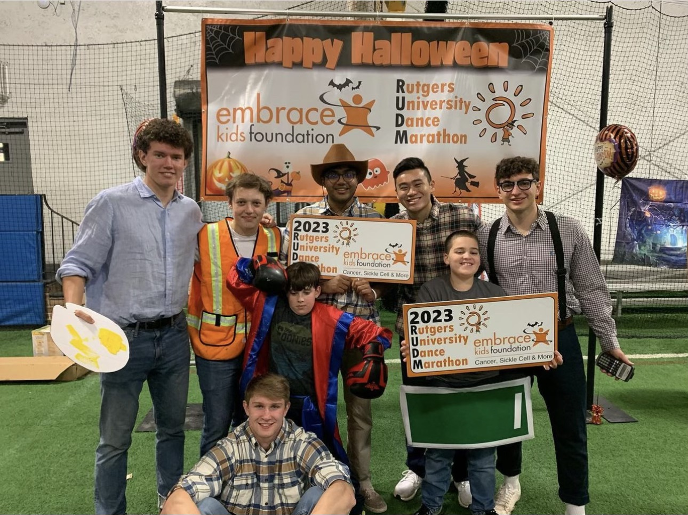
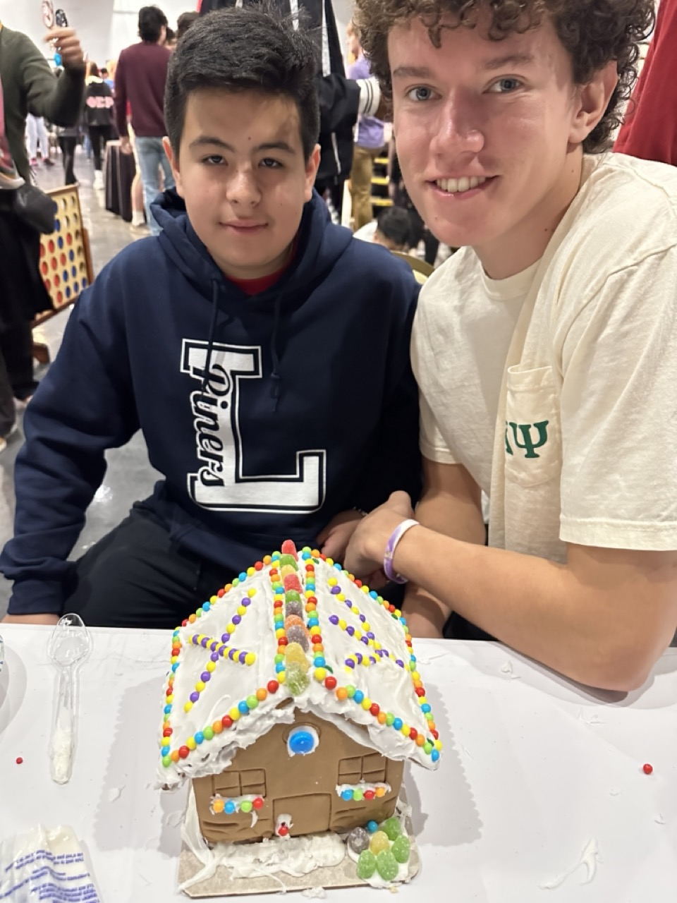
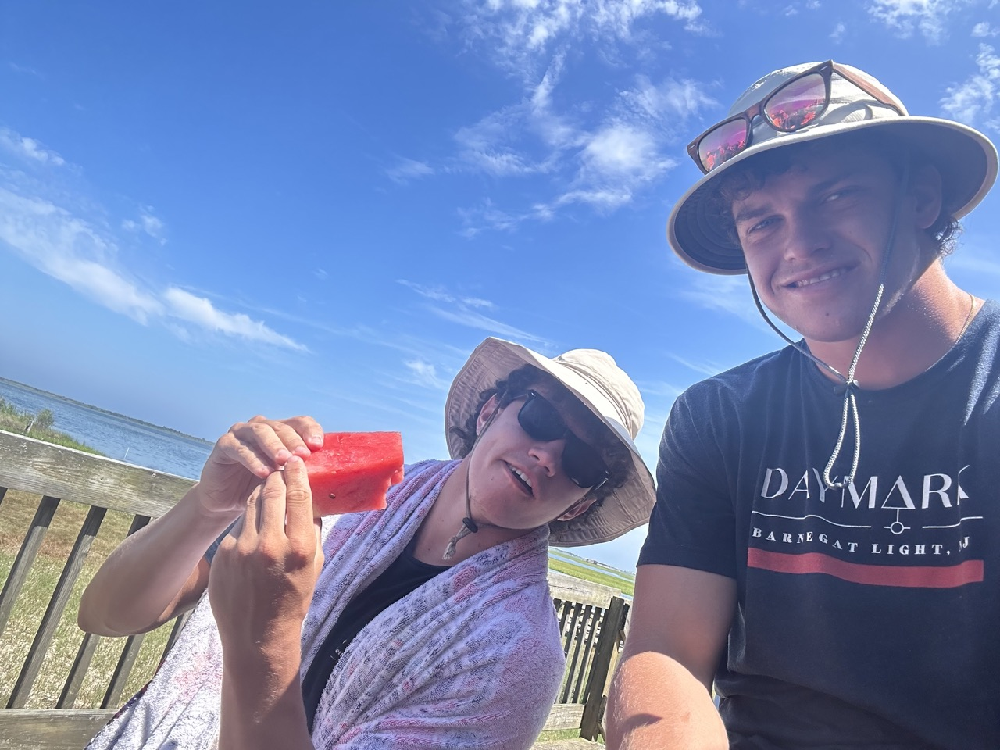

Volunteering Work
Embrace The Kids Foundation
Last year, in collaboration with the Embrace the Kids Foundation, I played an integral role in helping my organization raise over $50,000. These funds have been dedicated to alleviating the burden of non-medical bills for families navigating the heart-wrenching challenges of childhood cancer. Witnessing the unyielding spirit of these families, and the immense challenges they confront daily, has profoundly reshaped my worldview. I've been awakened to the immeasurable value of life's simple blessings, like the gift of health, which so many of us take for granted. This transformative journey has instilled in me a deeper sense of gratitude, and has also fueled a passion to continually engage in endeavors that makes a tangible difference in people's lives. Knowing our efforts provide tangible relief to these families reinforces my commitment to service and reinforces my belief in the potential of collective compassion.
Reclam The Bay Foundation
In my time volunteering at reClam the Bay, I have been consistently awed by the organization's unwavering commitment to the marine ecosystem. Their dedication is evident in every endeavor, from advocating for the ecosystem's protection to fostering public awareness about its significance. One notable initiative I had the privilege of participating in this summer was the sedge cleanup. The sedge, a pivotal hub for research, serves as a nurturing ground for the planting and safeguarding of clams. By championing the health and proliferation of these clams, reClam the Bay is pioneering efforts to replenish the bay, ensuring its vitality for generations to come. Their comprehensive approach underscores not just the scientific importance, but the inherent value of maintaining a balanced ecosystem, galvanizing community members to play their part in this invaluable mission.